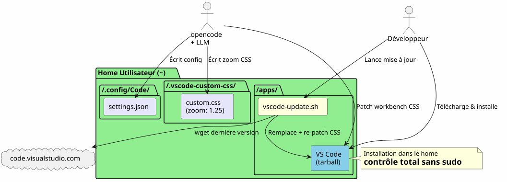
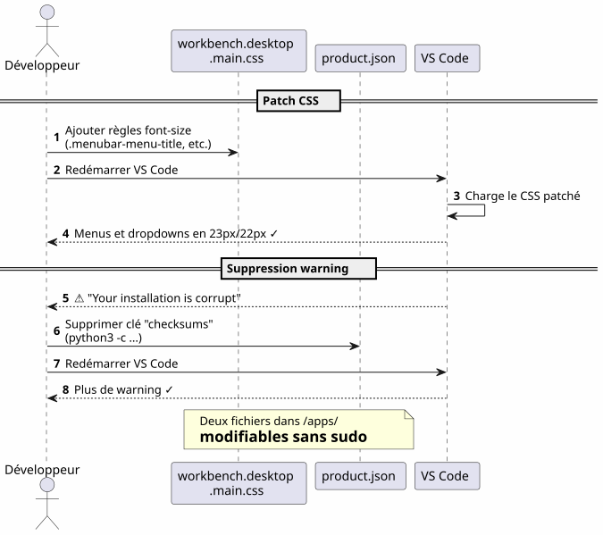
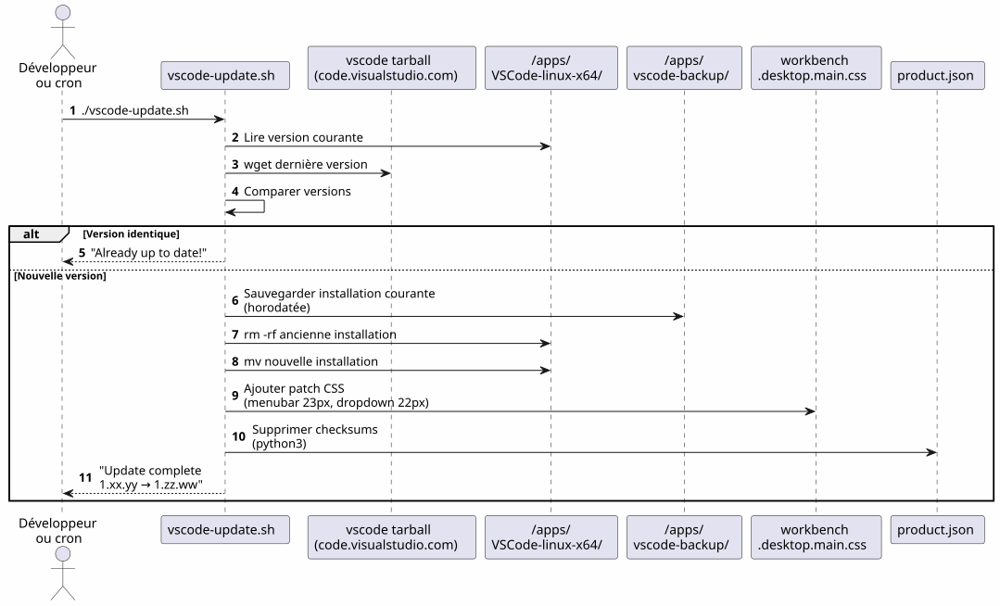
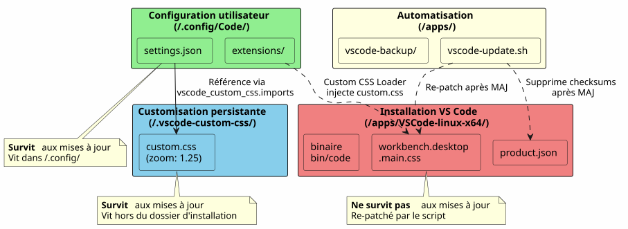
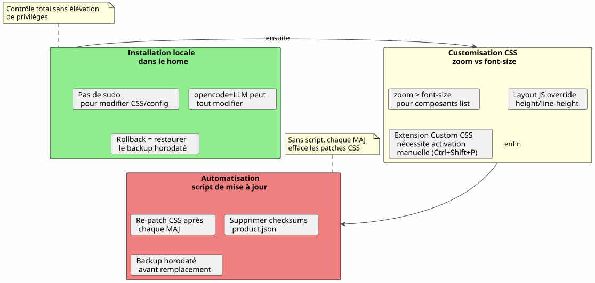

VS Code dans le Home : installation locale et customisation des polices sans sudo
Publié le 17 April 2026
- 1. Vue d’ensemble du parcours
- 2. Le Pourquoi : VS Code dans le Home
- 3. Customiser la police du menu principal
- 4. Customiser la police du volet Explorer — le combat
- 4.1. Tentative 1 : un paramètre qui n’existe pas
- 4.2. Tentative 2 : l’extension Custom CSS and JS Loader
- 4.3. Le piège : il faut activer l’extension à chaque fois
- 4.4. Tentative 3 : les lignes se superposent
- 4.5. La solution :
zoomsur le conteneur parent - 4.6. Récapitulatif des selectors et de ce qui fonctionne
- 5. Le script de mise à jour automatique
- 6. Fichiers impliqués — vue d’ensemble
- 7. Leçons apprises
- 8. Références rapides
Pourquoi installer VS Code dans /opt ou via apt quand on peut le poser dans son home et transformer son IDE en terrain de jeu sans jamais taper sudo ? Voici le récit d’une installation locale suivie d’un combat acharné pour agrandir les polices du menu et de l’explorateur de fichiers.
1. Vue d’ensemble du parcours

2. Le Pourquoi : VS Code dans le Home
2.1. Le problème avec l’installation système
VS Code installé via apt, dnf ou dans /opt verrouille les fichiers de l’application derrière les droits root. Toute modification du CSS natif, de product.json ou du dossier d’installation nécessite sudo.
Or, quand on utilise opencode (tool CLI pour piloter un LLM sur son code), l’agent a besoin de pouvoir :
-
Écrire dans les fichiers de configuration (
~/.config/Code/User/settings.json) — ça, c’est déjà dans le home -
Modifier les assets de l’IDE (CSS du workbench,
product.json) pour les customisations avancées — ça, c’est bloqué sans sudo
2.2. La solution : une installation locale
On télécharge l’archive tarball officielle et on la décompresse directement dans ~/apps/ :
mkdir -p ~/apps
cd ~/apps
wget "https://code.visualstudio.com/sha/download?build=stable&os=linux-x64" -O vscode.tar.gz
tar -xzf vscode.tar.gz
rm vscode.tar.gzLe binaire se trouve alors en ~/apps/VSCode-linux-x64/bin/code. Aucun sudo n’est nécessaire pour lire, modifier ou remplacer n’importe quel fichier sous ~/apps/VSCode-linux-x64/.
2.3. Avantages concrets
| Avantage | Détail |
|---|---|
Pas de sudo |
Tous les fichiers de l’IDE appartiennent à l’utilisateur |
Modification directe du CSS |
On peut patcher |
Script de mise à jour maison |
Un simple script shell télécharge, remplace et repatch automatiquement |
Isolation |
L’installation système n’est pas polluée ; rollback = supprimer le dossier |
3. Customiser la police du menu principal
3.1. Le constat
La police par défaut du menu principal (File, Edit, View…) et des dropdowns est trop petite. VS Code n’offre aucun paramètre pour la modifier.
3.2. La technique : patch CSS direct
On ajoute du CSS à la fin du fichier workbench.desktop.main.css :

CSS_FILE="$HOME/apps/VSCode-linux-x64/resources/app/out/vs/workbench/workbench.desktop.main.css"
cat >> "$CSS_FILE" << 'EOF'
.menubar-menu-title{font-size:23px!important}
.menubar>.menubar-menu-button{font-size:23px!important}
.monaco-menu-option{font-size:22px!important;line-height:34px!important}
.monaco-menu .action-label:not(.codicon){font-size:22px!important}
.menubar-menu-items-holder .monaco-menu .action-item .action-label{font-size:22px!important}
EOF3.3. Supprimer l’avertissement d’intégrité
VS Code détecte les modifications de ses fichiers et affiche un bandeau "Your installation is corrupt". Pour l’éviter, on supprime les checksums de product.json :
import json
product_json = "$HOME/apps/VSCode-linux-x64/resources/app/product.json"
with open(product_json, 'r') as f:
data = json.load(f)
data.pop('checksums', None)
with open(product_json, 'w') as f:
json.dump(data, f, indent=2)Après redémarrage, plus de warning et les menus sont enfin lisibles.
4. Customiser la police du volet Explorer — le combat
4.1. Tentative 1 : un paramètre qui n’existe pas
On tente d’abord le paramètre natif workbench.tree.fontSize dans settings.json :
{
"workbench.tree.fontSize": 20
}Résultat : aucun effet. Ce paramètre n’existe pas dans VS Code. La preuve que les paramètres non reconnus sont silencieusement ignorés.
4.2. Tentative 2 : l’extension Custom CSS and JS Loader
On installe l’extension be5invis.vscode-custom-css :
~/apps/VSCode-linux-x64/bin/code --install-extension be5invis.vscode-custom-cssOn crée un fichier CSS dans ~/.vscode-custom-css/custom.css avec des sélecteurs ciblant les éléments de l’explorateur :
.monaco-tree-rows .monaco-tree-row,
.sidebar .monaco-list-row,
.explorer-viewlet .monaco-list-row,
.monaco-list-row .monaco-icon-label {
font-size: 22px !important;
line-height: 36px !important;
}Et on référence ce fichier dans les settings :
{
"vscode_custom_css.imports": [
"file:///home/user/.vscode-custom-css/custom.css"
]
}Résultat : les changements ne s’appliquent pas.
4.3. Le piège : il faut activer l’extension à chaque fois
La documentation de l’extension est discrète sur ce point crucial : après chaque modification du CSS custom, il faut impérativement exécuter la commande depuis la palette :
-
Ctrl+Shift+P→ taper "Enable Custom CSS and JS" -
VS Code demande un redémarrage → accepter
Sans cette étape, le CSS n’est jamais injecté dans l’IDE.
4.4. Tentative 3 : les lignes se superposent
Même avec font-size: 22px et line-height: 36px, les lettres à jambage (g, p, f, b) débordent sur les lignes voisines. On tente d’ajouter height et min-height :
.monaco-list-row {
height: 36px !important;
min-height: 36px !important;
}Résultat : aucun changement. VS Code calcule les hauteurs de lignes en JavaScript et override les valeurs CSS.
4.5. La solution : zoom sur le conteneur parent
Plutôt que de lutter contre le layout JavaScript, on utilise la propriété zoom sur le conteneur des lignes :
.explorer-viewlet .monaco-list-rows,
.sidebar .monaco-list-rows {
zoom: 1.25;
}zoom agrandit uniformément le rendu du conteneur — texte ET espacement — sans casser le layout calculé par le moteur JavaScript de VS Code. Le facteur 1.25 correspond à peu près à un passage de 13px à 16px.
Résultat : les noms de fichiers sont enfin lisibles, les lignes correctement espacées.
4.6. Récapitulatif des selectors et de ce qui fonctionne
| Approche | CSS | Résultat |
|---|---|---|
|
|
Texte plus grand mais lignes superposées |
|
|
Aucun effet (override JS) |
|
|
Réussi — texte + espacement proportionnels |
5. Le script de mise à jour automatique

5.1. Le problème
Quand VS Code se met à jour, il remplace le dossier d’installation et efface tous les patches CSS. Il faut ré-appliquer les modifications manuellement à chaque fois.
5.2. Le script vscode-update.sh
On crée ~/apps/vscode-update.sh :
#!/bin/bash
set -e
VSCODE_DIR="$HOME/apps/VSCode-linux-x64"
BACKUP_DIR="$HOME/apps/vscode-backup"
TEMP_DIR="/tmp/vscode-update"
MENUBAR_FONT_SIZE="23px"
DROPDOWN_FONT_SIZE="22px"
echo "=== VS Code Local Updater ==="
CURRENT_VERSION=$("$VSCODE_DIR/bin/code" --version 2>/dev/null | head -1)
echo "Current version: $CURRENT_VERSION"
echo "Downloading latest VS Code..."
mkdir -p "$TEMP_DIR"
wget -q "https://code.visualstudio.com/sha/download?build=stable&os=linux-x64" \
-O "$TEMP_DIR/vscode.tar.gz"
echo "Extracting..."
mkdir -p "$TEMP_DIR/extracted"
tar -xzf "$TEMP_DIR/vscode.tar.gz" -C "$TEMP_DIR/extracted"
NEW_VERSION=$("$TEMP_DIR/extracted/VSCode-linux-x64/bin/code" \
--version 2>/dev/null | head -1)
echo "New version: $NEW_VERSION"
if [ "$CURRENT_VERSION" = "$NEW_VERSION" ]; then
echo "Already up to date!"
rm -rf "$TEMP_DIR"
exit 0
fi
echo "Backing up current installation..."
mkdir -p "$BACKUP_DIR"
cp -r "$VSCODE_DIR" "$BACKUP_DIR/VSCode-linux-x64-$(date +%Y%m%d-%H%M%S)"
echo "Updating..."
rm -rf "$VSCODE_DIR"
mv "$TEMP_DIR/extracted/VSCode-linux-x64" "$VSCODE_DIR"
rm -rf "$TEMP_DIR"
CSS_FILE="$VSCODE_DIR/resources/app/out/vs/workbench/workbench.desktop.main.css"
echo "Re-applying custom CSS patch \
(menubar=${MENUBAR_FONT_SIZE}, dropdown=${DROPDOWN_FONT_SIZE})..."
cat >> "$CSS_FILE" << CSSEOF
.menubar-menu-title{font-size:${MENUBAR_FONT_SIZE}!important}\
.menubar>.menubar-menu-button{font-size:${MENUBAR_FONT_SIZE}!important}\
.monaco-menu-option{font-size:${DROPDOWN_FONT_SIZE}!important;\
line-height:34px!important}\
.monaco-menu .action-label:not(.codicon)\
{font-size:${DROPDOWN_FONT_SIZE}!important}\
.menubar-menu-items-holder .monaco-menu .action-item .action-label\
{font-size:${DROPDOWN_FONT_SIZE}!important}
CSSEOF
PRODUCT_JSON="$VSCODE_DIR/resources/app/product.json"
if [ -f "$PRODUCT_JSON" ]; then
echo "Removing checksums to prevent integrity warning..."
python3 -c "
import json
with open('$PRODUCT_JSON','r') as f: data=json.load(f)
data.pop('checksums', None)
with open('$PRODUCT_JSON','w') as f: json.dump(data,f,indent=2)
print('Done.')
"
fi
echo "=== Update complete: $CURRENT_VERSION -> $NEW_VERSION ==="Le script :
-
Télécharge la dernière version stable
-
Vérifie si la version diffère de l’actuelle
-
Sauvegarde l’installation courante (timestampée) dans
~/apps/vscode-backup/ -
Remplace le dossier d’installation
-
Re-applique le patch CSS du menu principal
-
Supprime les checksums de
product.jsonpour éviter le warning d’intégrité
Les customisations du volet Explorer via l’extension Custom CSS et le fichier ~/.vscode-custom-css/custom.css survivent aux mises à jour car elles vivent hors du dossier d’installation.
|
6. Fichiers impliqués — vue d’ensemble

| Chemin | Rôle | Survit aux mises à jour ? |
|---|---|---|
|
Installation de l’IDE |
Non (remplacée) |
|
CSS du workbench (menu, dropdowns) |
Non (re-patché par le script) |
|
Checksums d’intégrité |
Non (re-nettoyé par le script) |
|
Script de mise à jour automatique |
Oui |
|
Paramètres utilisateur (fontSize, custom CSS) |
Oui |
|
CSS custom pour l’Explorer (zoom) |
Oui |
7. Leçons apprises

7.1. Installer dans le home libère tout
Une installation locale dans ~/apps donne un contrôle total sur VS Code :
-
Pas de
sudopour modifier le CSS ou la configuration -
L’agent opencode+LLM peut écrire dans les fichiers de config et les assets de l’IDE
-
Rollback trivial : restaurer le backup horodaté
7.2. zoom > font-size pour les composants list
VS Code contrôle la hauteur des lignes via JavaScript. Modifier font-size sans pouvoir toucher à la hauteur allouée par le moteur de layout donne des textes qui débordent. La propriété zoom sur le conteneur parent agrandit tout proportionnellement et contourne ce problème.
7.3. L’extension Custom CSS nécessite une activation explicite
Ce n’est pas un paramètre "set and forget". Chaque modification du fichier CSS custom nécessite de re-exécuter "Enable Custom CSS and JS" depuis la palette de commandes (Ctrl+Shift+P).
7.4. Un script de mise à jour est indispensable
Sans script, chaque mise à jour de VS Code efface les patches CSS du workbench. Le script vscode-update.sh automatise le téléchargement, le remplacement, le re-patch et le nettoyage des checksums.
8. Références rapides
-
Téléchargement VS Code : https://code.visualstudio.com/Download
-
Extension Custom CSS and JS Loader :
be5invis.vscode-custom-css -
Issue VS Code demandant un paramètre natif pour la police de l’Explorer : github.com/microsoft/vscode#149